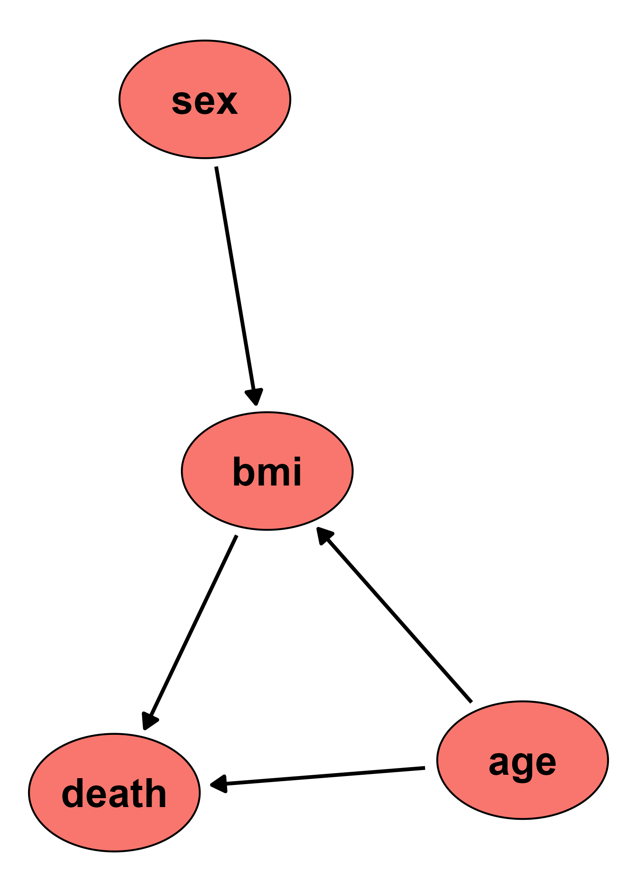

Author: Robin Denz
Description
simDAG is an R-Package which can be used to generate data from a known directed acyclic graph (DAG) with associated information on distributions and causal coefficients. The root nodes are sampled first and each subsequent child node is generated according to a regression model (linear, logistic, multinomial, cox, …) or other function. The result is a dataset that has the same causal structure as the specified DAG and by expectation the same distributions and coefficients as initially specified. It also implements a comprehensive framework for conducting discrete-time simulations in a similar fashion.
Installation
A stable version of this package can be installed from CRAN:
install.packages("simDAG")and the developmental version may be installed from github using the remotes R-Package:
Bug Reports and Feature Requests
If you encounter any bugs or have any specific feature requests, please file an Issue.
Examples
Suppose we want to generate data with the following causal structure:

where age is normally distributed with a mean of 50 and a standard deviation of 4 and sex is bernoulli distributed with p = 0.5 (equal number of men and women). Both of these “root nodes” (meaning they have no parents - no arrows pointing into them) have a direct causal effect on the bmi. The causal coefficients are 1.1 and 0.4 respectively, with an intercept of 12 and a sigma standard deviation of 2. death is modeled as a bernoulli variable, which is caused by both age and bmi with causal coefficients of 0.1 and 0.3 respectively. As intercept we use -15.
The following code can be used to generate 10000 samples from these specifications:
library(simDAG)
dag <- empty_dag() +
node("age", type="rnorm", mean=50, sd=4) +
node("sex", type="rbernoulli", p=0.5) +
node("bmi", type="gaussian", formula= ~ 12 + age*1.1 + sex*0.4, error=2) +
node("death", type="binomial", formula= ~ -15 + age*0.1 + bmi*0.3)
set.seed(42)
sim_dat <- sim_from_dag(dag, n_sim=100000)By fitting appropriate regression models, we can check if the data really does approximately conform to our specifications. First, lets look at the bmi:
mod_bmi <- glm(bmi ~ age + sex, data=sim_dat, family="gaussian")
summary(mod_bmi)
#>
#> Call:
#> glm(formula = bmi ~ age + sex, family = "gaussian", data = sim_dat)
#>
#> Deviance Residuals:
#> Min 1Q Median 3Q Max
#> -8.4802 -1.3555 0.0005 1.3423 8.6826
#>
#> Coefficients:
#> Estimate Std. Error t value Pr(>|t|)
#> (Intercept) 11.89194 0.07954 149.51 <2e-16 ***
#> age 1.10220 0.00158 697.41 <2e-16 ***
#> sexTRUE 0.40447 0.01268 31.89 <2e-16 ***
#> ---
#> Signif. codes: 0 '***' 0.001 '**' 0.01 '*' 0.05 '.' 0.1 ' ' 1
#>
#> (Dispersion parameter for gaussian family taken to be 4.022026)
#>
#> Null deviance: 2361465 on 99999 degrees of freedom
#> Residual deviance: 402190 on 99997 degrees of freedom
#> AIC: 422971
#>
#> Number of Fisher Scoring iterations: 2This seems about right. Now we look at death:
mod_death <- glm(death ~ age + bmi, data=sim_dat, family="binomial")
summary(mod_death)
#>
#> Call:
#> glm(formula = death ~ age + bmi, family = "binomial", data = sim_dat)
#>
#> Deviance Residuals:
#> Min 1Q Median 3Q Max
#> -4.4111 0.0035 0.0066 0.0126 0.2883
#>
#> Coefficients:
#> Estimate Std. Error z value Pr(>|z|)
#> (Intercept) -14.6833 3.5538 -4.132 3.6e-05 ***
#> age 0.2607 0.1698 1.535 0.125
#> bmi 0.1842 0.1402 1.314 0.189
#> ---
#> Signif. codes: 0 '***' 0.001 '**' 0.01 '*' 0.05 '.' 0.1 ' ' 1
#>
#> (Dispersion parameter for binomial family taken to be 1)
#>
#> Null deviance: 258.65 on 99999 degrees of freedom
#> Residual deviance: 214.03 on 99997 degrees of freedom
#> AIC: 220.03
#>
#> Number of Fisher Scoring iterations: 13The estimated coefficients are also very close to the ones we specified. More examples can be found in the documentation and the vignette.
License
© 2024 Robin Denz
The contents of this repository are distributed under the GNU General Public License. You can find the full text of this License in this github repository. Alternatively, see http://www.gnu.org/licenses/.